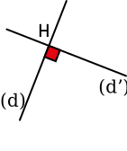

|
Chapitre 5
|
|
Partie 2
|
- Position relatives de droites
|
Définition :
Droites perpendiculaires :
Deux droites perpendiculaires sont deux droites qui se coupent en formant quatre angles droits.
Exemple :
H est appelé pied de la perpendiculaire à $(d)$.

Remarques :
- $(d')$ se lit "d prime".
- Pour noter deux droites perpendiculaires, on utilise le symbole $\perp$
Ici $(d)\perp(d')$
Droites parallèles :
Deux droites parallèles sont deux droites qui ne sont pas sécantes.
Exemple :
$(d)$ et $(d')$ sont parallèles, on note cela $(d)\parallel(d')$
Remarque :
- Lorsque deux droites sont confondues (qu'elles sont superposées), on dit aussi qu'elles sont parallèles.
Constructions :
Droites perpendiculaires :
Droites parallèles :